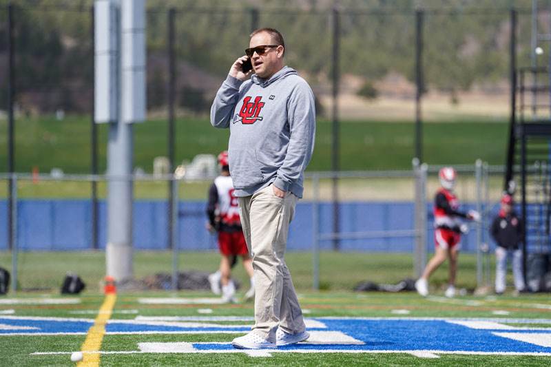

I've spent most of my career solving problems that don't fit neatly into a job title. My résumé says "Director of Web Development." Here's what that actually looks like.

Always in the middle of something.
At Integrity, I run a 150+ website ecosystem — scaling toward 400+ — that reaches millions of users every month. A lot of the work is less about writing code and more about turning messy, undefined problems into structured execution. Someone has a "quick website issue" and it becomes a coordinated effort across development, QA, compliance, design, and content teams. My job is to make sure it gets done, done right, and doesn't get stuck along the way.
I stay hands-on technically — reviewing code, fixing issues, building automation that cuts repetitive maintenance at scale — while managing and mentoring a distributed team and leading WCAG compliance initiatives across the full portfolio. As Director of Operations for University of Utah Men's Lacrosse, I managed a six-figure seasonal budget and coordinated travel for 50+ athletes and staff to away games across the country. Different context, same skillset: organize chaos, create systems, make things happen.
I noticed my QA team running the same manual scripts over and over — checking GTM implementation, scanning for outdated product language, flagging WCAG accessibility issues — across a whole portfolio of sites. So I built a Playwright-based GUI in Replit that lets anyone on the team run those tests on any site, any time, with no technical setup required. Results populate a live dashboard ranking best and worst performers. Issues push directly to Asana. No one asked for it. No budget was allocated.
I've also built AI-powered applications using the Anthropic API — tools that get used daily, not demoed once and forgotten. My toolset spans WordPress and Google Tag Manager to Playwright, Replit, and large language model APIs. The through-line isn't the stack. It's the instinct to spot a gap and close it before anyone else notices it's there.
In 2010, I founded Utah Lacrosse News because nobody was covering the sport in the state. I ran it for seven years. In 2019, I did it again — this time as Utah Lax Report. I started with zero followers, zero subscribers, and zero budget. Today I run it as a real media operation: writing, strategy, social presence, Substack, and community relationships. All of it. Because that's what it takes to build something people actually show up for.
Dad of four. Currently on a mission to visit all 30 MLB stadiums — because some goals need to be unreasonable. Lacrosse has been part of my life for as long as I can remember — the media work started because nobody was covering it, and I've never quite been able to stop. Everything else I build starts the same way: I notice something that could work better and I can't really leave it alone.
"Gets his stuff done. Kind. Willing to help." — How colleagues describe him
I'm someone teams rely on when something is unclear, stuck, or starting to break. If that's what you're looking for — let's talk.